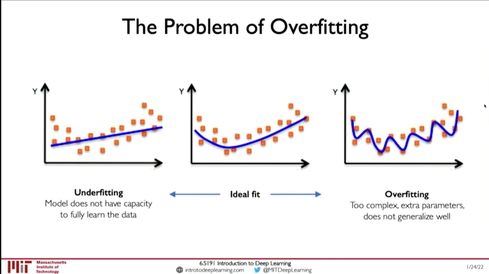
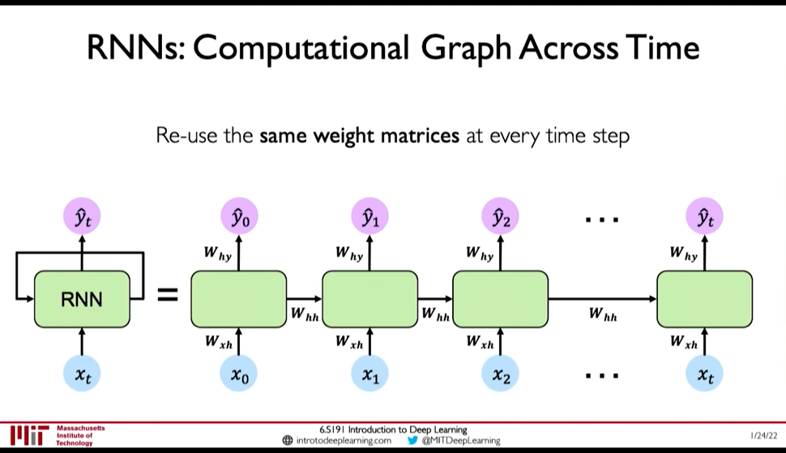
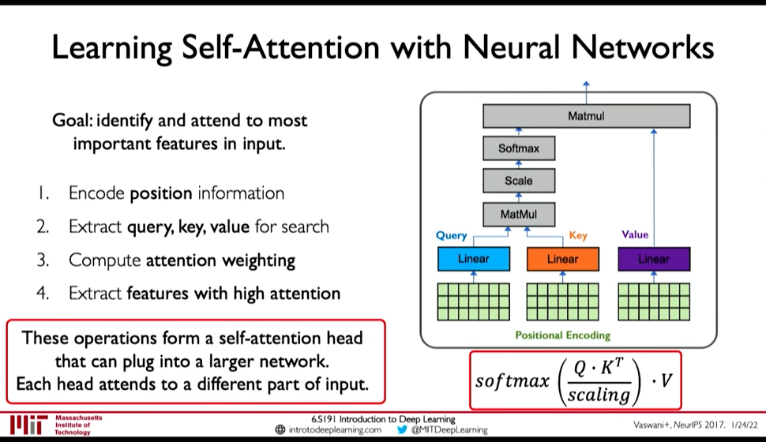
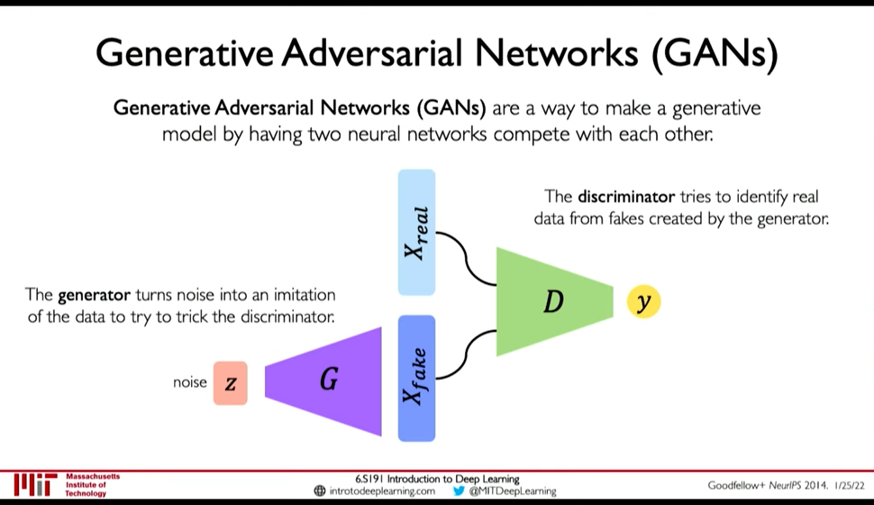
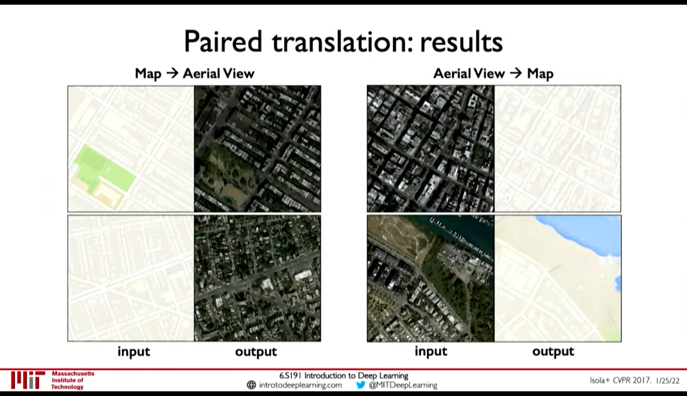
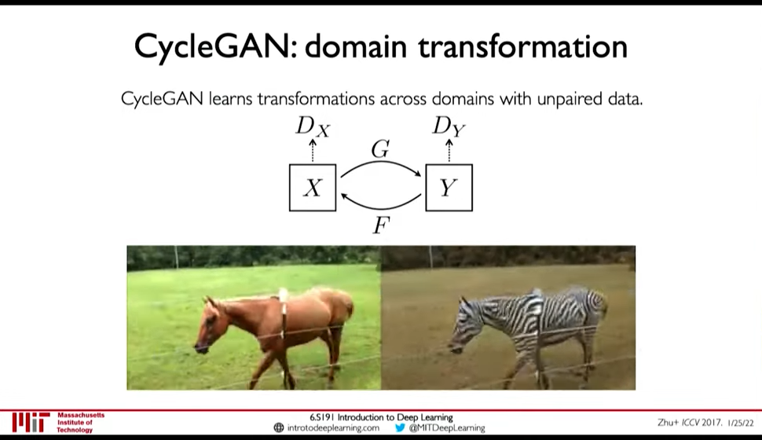

MIT 6.S191: Introduction to Deep Learning
Table of Contents
Notes from 6.S191 2022 https://www.youtube.com/playlist?list=PLtBw6njQRU-rwp5__7C0oIVt26ZgjG9NI
Lectures by:
- Alexander Amini
- Ava Soleimany
1. Introduction to Deep Learning
Lecture 1: Introduction to Deep Learning: In which we explore what Deep Learning is, why it is popular. How are Deep NNs are trained, and some cautions on overfitting.
1.1. What is Deep Learning

Figure 1: AI - ML - DL
- Artificial Intelligence: Any technique that enables computers to mimic human behaviour
- Machine Learning: Ability to learn without explicitly being programmed
- Deep Learning: Extract patters from data using neural networks
1.2. Why is it popular now?
1.3. Training Deep Neural Networks
- Optimization Algorithms:
- SGD
- Adam
- Adadelta
- Adagrad
- RMSProp
- Learning Rate
@ 00:39:35
- Low learning rate: Slow convergence, and may get stuck at local minima
- Large learning rate: May diverge
How to find Learning Rate?
- Try different learning rates and check which works better
- Adaptive Learning Rate
- Mini Batches
- Actual Loss is summation over all dataset. This is expensive to compute.
- And, Using only one example will be noisy
- So, compute loss from a subset of the dataset with say \(B\) samples. This is called mini-batching.
This allows:
- Smoother convergence
- Larger learning rate
- Parallization of computing gradient
- Overfitting
@ 00:44:57 Overfitting results good performance in Training data but the model doesn't generalize well and performs poorly in test dataset. Or, when there is distributional shift in data.

Figure 2: Overfitting
- Regularization
Regularization is a technique that constrains our optimization problem to discourage complex models. This improves generalization of model on unseen data
Techniques for Regulaization
- Dropout: randomly set neurons on hidden layers to 0
- Early Stopping: Stop training before we have a chance to overfit
Figure 3: Early Stopping (Regularization)
- Regularization
2. RNN and Transformers (MIT 6.S191 2022)
Lecture 2: Deep Sequence Modeling: In which we get introduced to sequential modeling, how recurrence (& RNN) help in sequential modelling.
2.1. Sequential Modelling
 @ 0:04:06
@ 0:04:06
Example of Sequence Modeling tasks:
- Sequential Input -> One Output : Sentiment Classification
- One Input -> Sequential Output: Image Captioning
- Sequential Input -> Sequential Output: Machine Translation
2.2. Sequence Modelling: Design Criteria
@ 0:20:29 To model sequences, we need to:
- Handle variable-length sequences
- Track long-term dependencies
- Maintain infromation about order
- Share parameters across the sequence
@ 0:20:41 RNN Meet these sequence modeling design criteria
- Example Task: Predict the Next Word
First we need to address Embedding: i.e. How to represent language to a Neural Network? (@ 0:23:10)
- One-hot embedding
- Learned Embedding (0:25:50 Representation Learning)

Figure 4: Encoding Language for NN
Now observe that this problem demands all the Design Criteria for sequential modelling:
- 0:26:30 Variable-Length : Sentences are not of fixed size
- 0:26:38 Long-term dependencies: An Idea in the beginning of a text influences the meaning till the end.
- 0:27:07 Sequence Order: Order of words in a sentence matter.
2.3. Recurrence and RNNs
@ 0:08:32
Consider a single feed forward network, it takes input and gives output at a single timestep. Lets call this the recurrent cell and use it as building block to accept sequence of input (i.e. input/output at timestep)
- We can pass inputs from multiple timesteps, but what we need is to connect the current input to input from previous timesteps
- This means we need to propagate prior computation/information through time: via. Recurrence Relation (@ 0:08:06)
- We do this through, Internal Memory or State: \(h_t\)

Figure 5: Recurrent NN
@ 0:10:56
- In RNN, we apply a recurrence relation at every time step to process a sequence
- RNNs have a state, \(h\), that is updated at each time step as a sequence is processed
- \(h_t = f_W(x_t, h_{t-1})\) where the weight \(W\) is same across timesteps but the input \(x_t\) and the memory \(h_t\) change

Figure 6: RNN: Computation Graph Across Time @ 0:15:16
- \(y_t = f(W_{hy}, h_t)\) why not xt ?
- \(h_t = f(W_{hh}, h_{t-1}, W_{hx}, x_t)\)
2.4. Learning Algorithm: Back propagation through time (BPTT)
Loss function: @ 0:16:28
- Sum the loss function at individual timestep to get the total loss

Figure 7: BPTT @ 0:29:34
- Exploding Gradients and Vanishing Gradients
@ 0:30:21 Computing gradients wrt \(h_0\) involves many factors of \(W_{hh}\) & repeated gradient computation.
- Exploding Gradient
If the gradients are > 1 then, repeated gradient computation causes graident to explode. Exploding gradient problem can be solved by:
- Gradient Clipping (i.e. don't allow the gradients to increase beyond certain threshold)
- Vanishing Gradient
However if the gradients are < 1, then as gradients are backpropagated the gradients decrease to near zero (vanishing gradient). Vanishing Gradient cause the model to focus on short term dependencies and ignore long term dependencies. It can solved by:
- Activation Function: ReLU (@ 0:32:35)
- Weight Initialization: Initialize weights to identity function, biases to zero to prevent rapid shrinking (@ 0:32:50)
- Network Architecture: Gated Cells (@ 0:33:05) [BPTT with partially uninterrupted gradient flow]
- Exploding Gradient
2.5. Gated Cells
@ 0:33:41 Instead of using simple feed forward network as recurrent cell, Gated Cells give better performance and improved training.
Figure 8: Gated Cell
LSTMs have the following property: (@ 0:35:24)
- Maintain a cell state
- Use gates to control the flow of information
- Forget gate gets rid of irrelevant information
- Store relevant information from current input
- Selectively update cell state
- Output gate returns a filtered version of the cell state
- Backpropagation through time with partially uninterrupted gradient flow (This handles the vanishing gradient problem)
2.6. Limitations & Desired Capabilities of RNN
RNN as presented above have the following limitations: @ 0:39:20
- Encoding Bottleneck: RNN need to take long sequence of information and condense it into a fixed representation
- Slow, no parallelization
- Not long memory: ~10, 100 length sequences are ok with LSTM, but not ~1000

Figure 9: Desired Capabilities of RNN @ 0:41:48
In contrast to those limitations, what we want is:
- Continuous Stream
- Parallelization
- Long Memory
Idea 1: Feed everything into dense network: (@ 0:42:52)
- Recurrence is eliminated, but
- Not scalable
- No order
- No long memory
Idea 2: Identify and Attend to what's important (@ 0:42:58)
2.7. Attention Is All You Need: Transformers
@ 0:43:28
- Identify parts to attend to
- Extract features with high attention
Attention has been used in:
- AlphaFold2: Uses Self-Attention
- BERT, GPT-3
- Vision Transformers in Computer Vision
- Idenitfying parts to attend to is similar to Search problem
@ 0:44:54
- Enter a Query (\(Q\)) for search
- Extract key information \(K_i\) for each search result
- Compute how similar is the key to the query: Attention Mask
- Extract required information from the search i.e. Value \(V\)

Figure 10: Attention as Search
- Self-Attention in Sequence Modelling
Goal: Identify and attend to most important features in input
We want to elimintate recurrence because that what gave rise to the limitations. So, we need to encode position information

Figure 11: Position-Aware Encoding (@ 0:48:32)
- Extract, query, key, value for search
- Multiply the positional encoding with three matrices to get query, key and value encoding for each word
- Compute attention weighting (A matix of post-softmax attention scores)
Compute pairwise similarity between each query and key => Dot Product (0:51:01)
Attention Score = \(\frac {Q . K^T} {scaling}\)
- Apply softmax to the attention score to get value in \([0, 1]\)
- Extract features with high attention: Multiply attention weighting with Value.

Figure 12: Self-Attention Head
2.8. Lab Tasks
- 0:37:38 Use RNN to generate brand new irish folk songs that have never been heard before.
- 0:38:13 Sentiment Classification
3. Convolutional Neural Networks
Lecture 3: Convolutional Neural Networks: In which we learn about CNNs, how filters detect features, and how deep stacking of these filters can be used to do many computer vision tasks.
We use vision to recognize what is there, where it is and also use it to predict future motion & intent. So, the task of Compute Vision is more than simply detecting stuffs.
3.1. Feature Detection
For computers image is input as matrix of numbers. And image classfication is done by High Level Feature Detection (0:08:45)
0:09:53 Feature detection could be done manually:
- Use Domain Knowledge, then
- Define features then
- Detect features to classify
But its not easy. Defining features may be easy but problems in detection are: 0:11:00
- Viewpoint variation
- Illumination
- Scale variation
- Deformation
- Occlusion
- Background clutter
- Intra-class variation
Figure 13: Difficulty in Feature Detection
Instead Use Neural Network for Feature Detection.
- Fully Connected Layers:
- Loses spatial information becuase image is flattened
- Requires high number of parameters
- Convolutional Filter (0:16:50)
- Preserves Spatial Information
- Lesser number of parameters
3.2. Filters detect Features
3.3. Convolutional Neural Networks (CNNs)
Figure 15: CNN: Spatial Arrangement of Output Volume
In convolutional neural network, we apply (convolute) filters to the input image.
- Each filter we apply outputs a 2d result
- So, after applying multiple filters to an input image we get an Output Volume. The height and width of the output may be smaller (downsampled) or same or higher.
- The output volume can be further convoluted to extract higher level features from lower level features.
For classification:
- We finally feed the feature volume to a Fully connected network
- then to softmax for classification
In CNNs the input is passed usually through
- Convolution Layer (containing Convolution & A bias)
- Non-linearity (e.g. ReLU)
- Pooling (e.g. Max-Pooling) (0:32:53)
Usually as you we do pooling (down sampling), we increase the number of features. But recently (in e.g. Patches Are All You Need?) isotropic model have shown to be give good results. Isotropic model use the same height and width throughout the network. (i.e. they don't downsample)
We can keep the first part of the network (the feature learning) and swap out the second part depending upon task: (0:36:10)
- Classification
- Object Detection
- Segmentation
- Probabilistic Control
3.4. Object Detection
@ 0:38:51 Object detection is the problem of finding a bounding box were the detected object is. There may be multiple objects of different types of various sizes. So this is a difficult problem.
Native Method would be to:
- Sample lots of different sizes and positions of boxes
- Clip the image to the box, and send to classification network
- Object Detection with R-CNNs
0:41:39 Find regions that we think have objects. Use CNN to classify. So, a model proposes regions for object classification, and then we pass the region to object classification network.
Figure 16: R-CNNs
Demerits:
- Brittle
- Region Extraction network is detached from classification network
- Faster R-CNN
Figure 17: Faster R-CNN
- Learns the Region Proposal Network along with feature extraction and classification
- Feeds the image to feature extraction only once
- Grab all the regions, process then independently
- Pass the region through feature detection head again (?)
- Pass to classification network
- Faster than R-CNN
3.5. Semantic Segmentation: Fully Convolutional Networks
Semantic Segmentation is like one classification per pixel. Fully Convolutional Networks tackle this problem by using downsampling operation in first half and upsampling operation in second half of the network.
Figure 18: Semantic Segmentation
3.6. Continuous Control
Navigation from Vision is a Continuous control task: A model that decides the steering angle from input image. Here the output is a continuous probability distribution. This is different from classification and segmentation task.
Figure 19: Navigation from Vision
In the above model, continuous control is done as follows:
- The top part of model doesn't see the route, and outputs a probabilistic control output
- The bottom part sees the route, and outputs a path to take given the route
The loss function here is interesting because in reality we won't take multiple paths but a single one at a given intersection. However, after seeing a bunch of intersections the model will learn the different paths that can be taken. (0:46:26)
\(L = - \log(P(\theta | I, M))\)
4. Deep Generative Modeling
Lecture 4: Deep Generative Modeling
Generative Modeling is Unsupervised Learning Problem where we have to find an underlying structure of the data.
Goal: Take as input training samples from some distribution and learn a model that represents that distribution @ 0:03:24
There are two class of problems:
- Density Estimation: Finding the underlying distribution of data (i.e. the probability density function)
- Sample Generation: Sampling an sample from that distribution
Neural Networks are good for this task because @ 0:04:34
- the data distribution is high dimensional
- and the distribution is complex
Some classes of Generative models are (0:07:30):
- Autoencoders and Variational Autoencoders (VAEs)
- Generative Adversarial Networks (GANs)
Both of these are latent variable models.
4.1. Uses of Generative Models
- Debiasing
We can uncover underlying features in a dataset and create more fair and representative dataset.

Figure 20: Debiasing
- Outlier Detection
We can detect rare events in data which are nonetheless important for model to handle. E.g. for autonomous driving detect outliers like a deer walking and make model more capable of handling those scenarios is very important.
Figure 21: Outlier Detection
4.2. Latent Variable
0:07:50
Latent Variables are variables that we cannot observe but they influence our observation. As an analogy, take Plato's Allegory of Cave. The shadows are what we observe (the observed variables), but the actual object that cast the shadows are like the latent variables.
4.3. Autoencoders
- Autoencoders build some encoding of an input and try to reconstruct the input.
- It is an unsupervised approach for learning a lower-dimensional feature representation from unlabeled training data
Figure 22: AutoEncoders
Reconstruction is an powerful technique in Unsupervised Learning. 0:12:40
4.4. Variational AutoEncoder
0:14:08
With autoencoder, the same latent variable \(z\) gives the same output \(\hat{x}\) because the decoding is deterministic. VAEs introduce stochasticity so that new samples can be generated. 0:15:09
This is done by breaking down the latent space \(z\) to a mean vector (\(\mu\)) and standard deviation vector (\(\sigma\)). The encoder outputs \(\mu\) and \(\sigma\) from which \(z\) can be sampled.
- VAE Loss
Figure 23: VAE optimization
Loss function \(L(\phi, \theta, x)\) is reconstruction loss + regularization term.
- Encoder computes: \(q_{\phi}(z|x)\) i.e. the distribution of latent representation given the input image
- Decoder computes: \(p_{\theta}(x|z)\) i.e. the distribution of images given the latent representation
- Reconstruction loss: log-likelihood (?), \(||x-\hat{x}||^2\) (0:18:24)
- Regularization Loss
Regularization loss: \(D(q_{\phi}(z|x)\ ||\ p(z))\) is divergence in the two probability distribution.
- \(q_{\phi}(z|x)\) is inferred latent distribution
- \(p(z)\) is a prior distribution on the latent space
- A common choice for the prior is a Normal Gaussain distribution
- Encourages encodings to distribute evenly around the center of the latent space
- Penalize the network when it tries to "cheat" by clustering points in specific regions (i.e. by memorizing the data)
We use Regularization function so that: 0:22:31
- Latent space is continuous
- Latent space is Completeness: Sampling from latent space must give meaningful content
If regularization is not enforced: 0:24:45
- variance can be small and
- means may be distributed far apart so that there is no meaningful content in between
However, greater Regularization can adversely effect the reconstruction. So, a balance is needed.
- Optimization
0:26:55 Backpropagation cannot be done through Sampling operation. So, we have to use a clever idea: Reparametrize the sampling layer \(z \sim N(\mu, \sigma^2)\) as \(z = \mu + \sigma \times \epsilon\) where \(\epsilon\) is sampled stochastically.

Figure 24: Reparametization of Sampling Layer
- Disentanglement β-VAEs
We want latent variables that are uncorrelated with each other. β-VAEs achieve this by enforcing diagonal prior on the latent variables to encourage independence.

Figure 25: β-VAEs
4.5. Generative Adversarial Networks (GANs)
Idea: We don't want to explicitly model density, and instead just sample to generate new instances.

Figure 26: GANs
- Generator generates data from noise
- Discriminator tries to separate between real and fake data
GANs avoid the problem of latent space regularization in AutoEncoders, because in some way the random noise \(z\) is itself the latent space, and it being within our control is both continuous and complete. If it wasn't complete the generator won't perform good on some input.
- Training GANs
0:39:43
- Loss function is Adversial Objective
Discriminator (\(D\)) tries to maximize how well it can discriminate between fake \(G(z)\) data, and real data (\(x\))
\(\arg\max_D E_{z,x}[\log D(G(z)) + \log(1-D(x))]\)
- Generator (\(G\)) tries to fool the discriminator \(D\): \(\arg \min_G E_{z,x} [\log D(G(z))]\)
So, the overall objective is:
\(\arg \min_G \max_D E_{z,x} [ \log D(G(z)) + \log(1 - D(x))]\)
0:43:06 GANs are distribution transformers. The generator maps data from gaussain noise to a target distribution. 0:43:27 We can interpolate in noise distribution to interpolate in target distribution.
- Progressive Growing
- StyleGAN(2): progressive growing + style transfer
0:45:30
- Conditional GANs

Figure 27: Paired Translation an example of Conditional GANs
- CycleGAN: domain transformation
CycleGAN emphasize the idea of GANs being distribution transformers.

Figure 28: CycleGAN: Transformation from one distribution to another distribution.
 Add more layers as training progresses
Add more layers as training progresses
4.6. Distribution Transformer

Figure 29: Distribution Transformers
5. Deep Reinforcement Learning
Lecture 5: Deep Reinforcement Learning: In which we learn how we can marry reinforcement learning with recent advancements in deep learning.
Paradigm till now was that we train on fixed dataset, but in RL our algorithm is placed in a dynamic environment and the "dataset" is not fixed.

Figure 30: Classes of Learning Problems
5.1. Introduction
0:07:49
- Agent: The one who takes actions
- Environment: the world in which the agent takes actions
- Action: a move the agent can make in the environment
- Action Space: the set of possible actions
- Observations/State: a situation the agent can observe in the environment
- Reward: feedback taht measures the success or failure of the agent's action
- 0:10:26 Total Reward i.e. Return: \(R_t = \sum_{i=t}^{\inf} r_i\)
- 0:12:14 Total Discounted Reward: \(R_t = \sum_{i=0}^{\inf} \gamma^i r_{i+t}\)
- Q-Function: Expected return from taking an action \(a_t\) in state \(s_t\) \(Q(s_t, a_t) = E[R_t|s_t,a_t]\)
Goal of RL is to find a policy \(\pi(s)\) that takes the best action to take at state \(s_t\).
5.2. Learning Algorithms
0:17:54
- Value Learning: Find the Q-Function \(a = \arg \max_a Q(s,a)\)
- Policy Learing: Find the policy \(a \sim \pi(s)\)
5.3. Deep Q Networks (DQN)
0:24:56 Two ways to model the Q-Function:
- Input: Action + State; Output: Expected Return
- Input: State ; Outptu: Expected Return for all action
Loss function is Q-Loss \(L = E[|| ( r + \gamma \max_{a'} Q(s', a') ) - Q(s,a) ||^2]\)

Figure 31: DQN Atari Network
0:32:58 Downsides:
- Complexity: Cannot handle continuous action spaces, or when action space is discrete but large
- Flexibility: Policy is deterministic so Q-Learning cannot learn stochastic policies
5.4. Policy Gradient Methods
0:35:08
- Sometimes optimal policy is stochastic
- Policy Gradient methods can handle continuous action space (e.g. network can output a mean \(\mu\) and variance \(\sigma^2\))
0:43:49
Loss function is \(L = -\log P (a_t | s_t) R_t\)
The basic Training Algorithm for Reinforcement Learning is
- Initialize the agent
- Run a policy until termination.
- Record all states, actions, rewards
- Decrease probability of actions that resulted in low reward
- Increase probability of actions that resulted in high reward
Step 4 and 5 are the curx of RL algorithm. But step 2 is also difficult unless there is a simulation. Because in real life we cannot run experiments until failure.
Figure 32: Car Runs off the Cliff before it learns that's bad (0:48:24)
5.5. Applications
- AlphaGo: Go
- AlphaZero: Go, Chess, Shogi
6. Deep Learning New Frontiers
6.1. Universal Approximation Theorem
A feedforward network with a single layer is sufficient to approximate, to an arbitrary precision, any continuous function.
But,
- number of hidden units may be infeasibly large
- the resulting model may not generalize
- no method to find weights is provided by this theorem
6.2. AI `Hype`: Historical Perspective
Figure 33: AI History
6.3. Limitations
- Generalization
Understanding Deep Neural Networks requires rethinking Generalization
In Zhang+ ICLR 2017 Paper,
- they assign random labels to image classification training set
- as the degree of randomization increased, the test accuracy decreased
- but the training accuracy didn't
This implies, the NN was able to fit the random data.
Figure 34: Deep NN can fit to random data
- Aleatoric Uncertainty
0:27:30 Uncertainty inherent in the data.
E.g. for a NN trained to classify dog vs cat. If we show image with both cat and dog, it should output P(cat) = 1 and P(dog) = 1 but it can't because it is constrained (P(cat) + P(dog) = 1)
- Epistemic Uncertainty
Network's confidence in its perdiction. Aka. model uncertainty.
- Perturbations: Adversarial Examples
 To generate adversarial examples, fix the label (\(y\)) and weight (\(W\)), and perturb the input (\(x\)) to increase the loss.
To generate adversarial examples, fix the label (\(y\)) and weight (\(W\)), and perturb the input (\(x\)) to increase the loss.
\(x \leftarrow x + \eta \frac {\partial L(W,x,y)} {\partial x}\)
- Other Limitations
0:35:05
- Very data hungry (eg, often millions of examples)
- Computationally intensive to train and deploy (tractably requires GPUs)
- Easily fooled by adversarial examples
- Can be subject to algorithmic bias
- Poor at representing uncertainty (how do you know what the model knows?)
- Uninterpretable black boxes, difficult to trust
- Difficult to encode structure and prior knowledge during learning
- Finicky to optimize: non-convex, choice of architecture, learning parameters
- Often require expert knowledge to design, fine tune architectures

7. Notes
- β-VAEs paper?
CREATED:
crop the images:
< Collapse code block
(defun crop-mit-image () "Keep the point at the image and execute this fuction to crop out only the presentation from the screenshot" (interactive) (let ((file (org-element-property :path (org-element-context)))) (shell-comand (format "convert -crop 970x560+0+80 +repage ./%s ./%s" file file))))